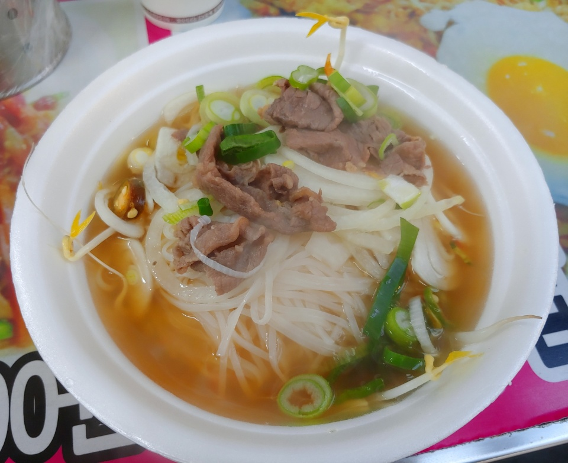

노량진컵밥거리
베트남쌀국수 - 3000원
노량진역 3번출구로 나와서 경찰서방향으로 5분정도 걷다보면 컵밥거리가 나온다.
거기서 5번쨰 집에서 배트남 쌀국수를 판다.
간결하게 말하자면 보통쌀국수 체인점보다 여기가 훨씬 더 맘에 들었다.
3000원이라는 말도 안 돼는 가격으로 지금까지 먹었던 쌀국수중 가장 맛이 있었다.
조금 짜다는 평도 있지만 깔끔한 육수가 내입맛에는 간간하게 잘 맞았다.
잘못 하면 느끼해질 수 있는걸 청양고추가 은은한 칼칼함으로 잘 잡아줬다.
혹시 면이 적고 숙주가 많을까 걱정도 했지만 모든 재료들은 밸런스가 맞았다.
하지만 고수맛으로 먹는 사람들에게는 슬프게도 고수는 들어있지 않다.
고수를 안먹는 나에게는 희소식이었다.
다미네컵밥 - 4000원
베트남쌀국수 바로 옆집이었는데 사람이 많아 보여서 고민하다가 먹어봤다.
컵밥에 들어갈만한 재료들을 중점으로 36가지의 메뉴들이 있다.
내가 시킨 메뉴는 삼겹살+스팸+날치알+참치마요
매콤한소스와 데리야끼소스,마요네즈가 의외의 궁합으로 잘 어울렸고
날치알과 옥수수가 씹는 식감을 더해 줬다.
반숙계란,스팸,삼겹살은 밥과 함께 든든함을 채워줬다.
오가네 - 고구마피자2500원/더블치즈2500원
특이한 비주얼로 궁금해서 사먹게되는 이 팬케이크는 일반적인 팬케이크와 다르게
부드럽기만 한게 아니라 철판에 닿는 면은 바삭하다.
나는 개인적으로 고구마피자맛이 더 맘에 들었다.피자치즈와 고구마가 달달하면서
부드러워서 내입맛에 맞았다.
더블치즈는 이름과 다르게 치즈가 많이 들어간게 아니었다.
제일 많이 나가는 햄치즈가 치즈가루가 들어가고 더블치즈는 체다치즈가 들어가
이렇게 이름에 차이를 둔것 뿐이었다.
치킨.카레떡볶이 - 1인분/3500원
먹방영상을 보다보면 떡볶이와 치킨이 잘 어울리는 조합으로 자주 등장했었다.
확실히 치킨과 떡볶이는 잘어울리는 조합이었다.
떡볶이를 먹으면서 튀김을 떡볶이소스에 찍어먹는 사람들이 많을 것이다.
치킨역시 튀김에 속해 떡볶이와 아주 잘어울린다.
하지만 이름과 다르게 카레맛은 아니었다.미미하게 카레향이 나긴했으나
떡볶이에 더 가까웠다.